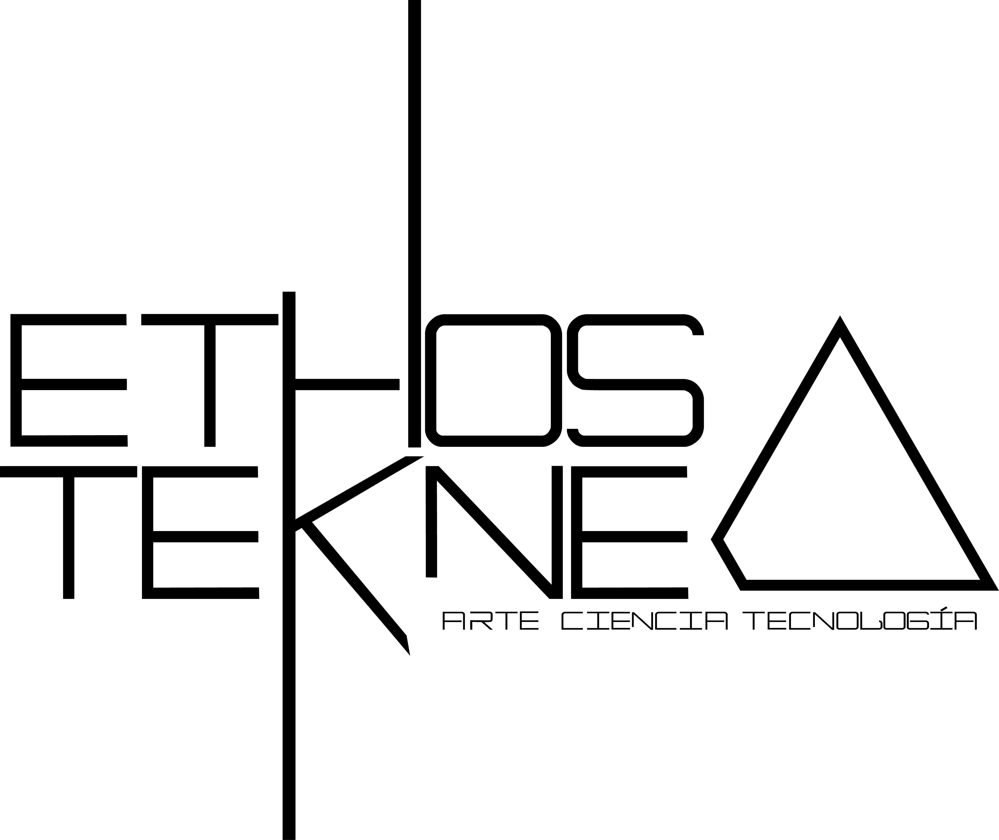

modulaciones del discurso
El tiempo y su flujo son los agentes de la memoria. A este, el tiempo, le sobreviene el olvido o la historia, historia que efímera o persistente se define ahora en lo digital.
¿De qué habla Medellín y qué tanto perdura?
Esta intervención explora la persistencia de los tópicos de ciudad a partir de los Twits publicados por sus habitantes. Un algoritmo de Inteligencia Artificial clasifica los tweets de acuerdo a sus relaciones textuales y, partiendo de estos datos, crea una experiencia audiovisual que pone en evidencia las relaciones ocultas entre aquello que decimos y su transcurrir.
Lanzamiento de la obra: Próximo 4 de Julio.
Un proyecto con el patrocinio de

y el apoyo de
